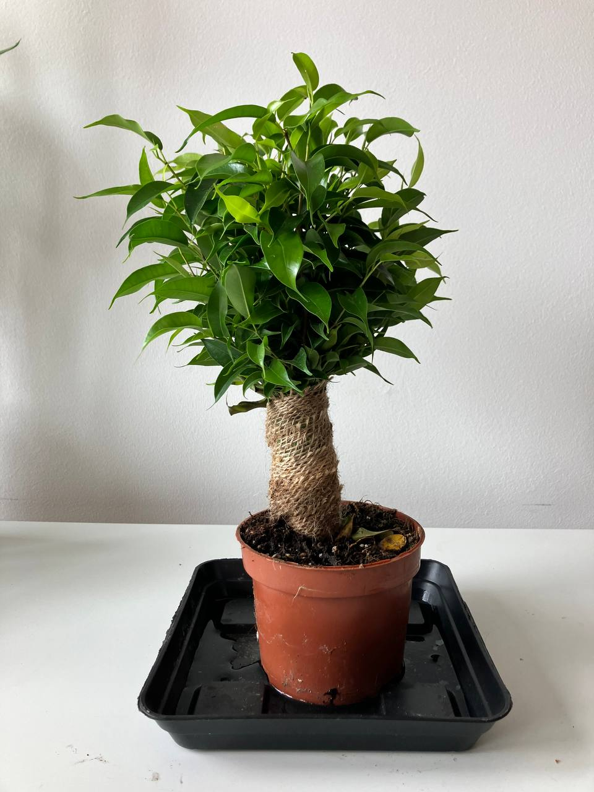
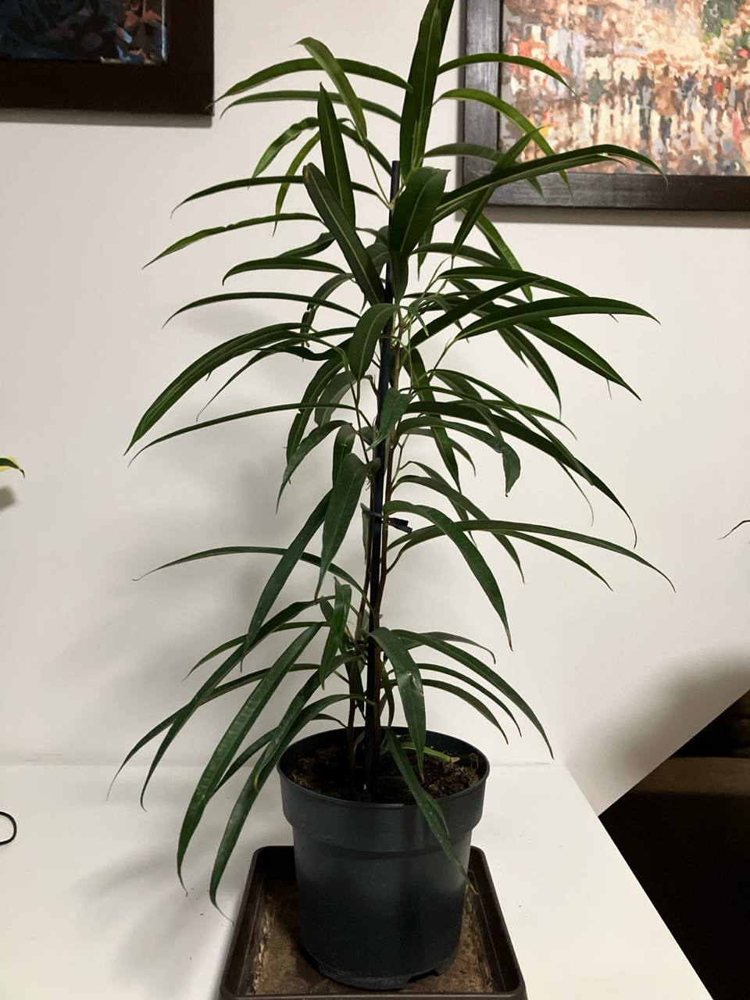

Activity
- Scheduled
- Feeding 01-09-2024
- Repotting 03-09-2026
Ficus Benjamina Plant Care Guide
Environment
Light
- Bright, Indirect Light: Ficus Benjamina prefers bright, indirect light. It can tolerate some direct sunlight, but too much can cause leaf burn. Avoid low light conditions as they can cause leaf drop.
Soil
- Well-Draining Soil: Use a well-draining potting mix. A combination of peat, perlite, and pine bark works well. Ensure the pot has drainage holes to prevent waterlogging.
Temperature
- Moderate Temperatures: Ficus Benjamina thrives in temperatures between 65-75°F (18-24°C). Avoid sudden temperature changes and keep the plant away from drafts, air conditioners, and heaters.
Routine jobs
Watering
- Watering Schedule: Water the plant when the top inch of soil is dry. Overwatering can lead to root rot, while underwatering can cause leaf drop. Use lukewarm water and ensure good drainage.
- Humidity: Ficus Benjamina enjoys high humidity. Mist the leaves regularly or place a humidifier nearby to maintain humidity levels.
Feeding
- Fertilization: Feed the plant monthly during the growing season (spring and summer) with a balanced liquid fertilizer. Reduce feeding during fall and winter when the plant's growth slows down.
Pruning
- Regular Pruning: Prune the plant to maintain its shape and remove any dead or damaged branches. Regular pruning encourages bushier growth and prevents the plant from becoming leggy.
Potting
- Repotting: Repot the plant every 2-3 years or when it outgrows its current pot. Choose a pot that is one size larger and refresh the soil to provide new nutrients.
Troubleshoot
- Common Pests: Watch for pests such as spider mites, scale, and mealybugs. Treat infestations promptly with insecticidal soap or neem oil.
- Leaf Drop: Ficus Benjamina is sensitive to changes in its environment. Leaf drop can occur due to changes in light, temperature, or watering habits. Try to maintain consistent care to minimize stress on the plant.

Activity
- Scheduled
- Feeding 01-09-2024
- Repotting 03-08-2026
Ficus maclellandii Plant Care Guide
Environment
Light
- Bright, Indirect Light: Ficus maclellandii thrives in bright, indirect light. Direct sunlight can cause leaf burn, while too little light can slow growth.
Soil
- Well-Draining Soil: Use a high-quality potting mix with good drainage. A mix of peat, perlite, and pine bark works well.
Temperature
- Warm Temperatures: This plant prefers temperatures between 60-75°F (16-24°C). Avoid cold drafts and sudden temperature changes.
Routine jobs
Watering
- Consistent Watering: Water the plant when the top inch of soil feels dry. Ensure the soil is evenly moist, but avoid overwatering which can lead to root rot.
- Humidity: Ficus maclellandii enjoys moderate to high humidity. Increase humidity by misting the leaves regularly or using a humidifier.
Feeding
- Regular Fertilization: Feed the Ficus maclellandii every month during the growing season (spring and summer) with a balanced liquid fertilizer diluted to half strength.
Potting
- Proper Container: Use a pot with drainage holes to prevent waterlogging. Repot the plant every 2-3 years or when it outgrows its current pot.
Troubleshooting
- Common Pests: Watch for pests such as spider mites, scale, and mealybugs. Treat infestations with insecticidal soap or neem oil.
- Leaf Care: Remove any yellow or damaged leaves to keep the plant healthy and prevent disease.
Pruning
- Regular Pruning: Prune the plant to maintain its shape and remove any dead or leggy growth. This also encourages bushier growth.